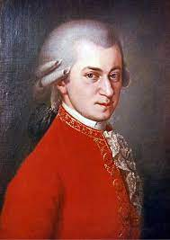
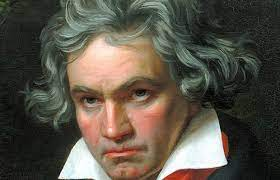
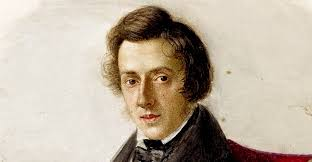
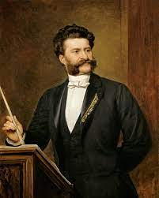

Wolfgang Amadeus Mozart From Wikipedia, the free encyclopedia Jump to navigationJump to search "Mozart" redirects here. For other uses, see Mozart (disambiguation). Mozart, c. 1781, detail from portrait by Johann Nepomuk della CroceWolfgang Amadeus Mozart Signature.svg Wolfgang Amadeus Mozart[a] (27 January 1756 – 5 December 1791), baptised as Joannes Chrysostomus Wolfgangus Theophilus Mozart,[b] was a prolific and influential composer of the Classical period. Despite his short life, his rapid pace of composition resulted in more than 800 works of virtually every genre of his time. Many of these compositions are acknowledged as pinnacles of the symphonic, concertante, chamber, operatic, and choral repertoire. Mozart is among the greatest composers in the history of Western music,[1] with music admired for its "melodic beauty, its formal elegance and its richness of harmony and texture".[2] Born in Salzburg, in the Holy Roman Empire, Mozart showed prodigious ability from his earliest childhood. Already competent on keyboard and violin, he composed from the age of five and performed before European royalty. His father took him on a grand tour of Europe and then three trips to Italy. At 17, Mozart was engaged as a musician at the Salzburg court but grew restless and travelled in search of a better position. While visiting Vienna in 1781, he was dismissed from his Salzburg position. He chose to stay in Vienna, where he achieved fame but little financial security. During his final years in Vienna, he composed many of his best-known symphonies, concertos, and operas, and portions of the Requiem, which was largely unfinished at the time of his early death at the age of 35. The circumstances of his death are largely uncertain and have thus been much mythologized.

Beethoven" redirects here. For other uses, see Beethoven (disambiguation) and Ludwig van Beethoven (disambiguation). Ludwig van Beethoven Portrait by Joseph Karl Stieler, 1820 Portrait by Joseph Karl Stieler, 1820 Born Bonn Baptised 17 December 1770 Died 26 March 1827 (aged 56) Vienna Occupation Composerpianist Notable work List of compositions Parent(s) Johann van Beethoven Maria Magdalena Keverich Signature Beethoven Signature.svg Ludwig van Beethoven (/ˈlʊdvɪɡ væn ˈbeɪtoʊvən/ (audio speaker iconlisten), German: [ˈluːtvɪç fan ˈbeːtˌhoːfn̩] (audio speaker iconlisten); baptised 17 December 1770 – 26 March 1827) was a German composer and pianist. Beethoven remains one of the most admired composers in the history of Western music; his works rank amongst the most performed of the classical music repertoire and span the transition from the Classical period to the Romantic era in classical music. His career has conventionally been divided into early, middle, and late periods. His early period, during which he forged his craft, is typically considered to have lasted until 1802. From 1802 to around 1812, his middle period showed an individual development from the styles of Joseph Haydn and Wolfgang Amadeus Mozart, and is sometimes characterized as heroic. During this time, he began to suffer increasingly from deafness. In his late period, from 1812 to 1827, he extended his innovations in musical form and expression. Beethoven was born in Bonn. His musical talent was obvious at an early age. He was initially harshly and intensively taught by his father Johann van Beethoven. Beethoven was later taught by the composer and conductor Christian Gottlob Neefe, under whose tutelage he published his first work, a set of keyboard variations, in 1783. He found relief from a dysfunctional home life with the family of Helene von Breuning, whose children he loved, befriended, and taught piano. At age 21, he moved to Vienna, which subsequently became his base, and studied composition with Haydn. Beethoven then gained a reputation as a virtuoso pianist, and he was soon patronized by Karl Alois, Prince Lichnowsky for compositions, which resulted in his three Opus 1 piano trios (the earliest works to which he accorded an opus number) in 1795. His first major orchestral work, the First Symphony, premiered in 1800, and his first set of string quartets was published in 1801. Despite his hearing deteriorating during this period, he continued to conduct, premiering his Third and Fifth Symphonies in 1804 and 1808, respectively. His Violin Concerto appeared in 1806. His last piano concerto (No. 5, Op. 73, known as the Emperor), dedicated to his frequent patron Archduke Rudolf of Austria, was premiered in 1811, without Beethoven as soloist. He was almost completely deaf by 1814, and he then gave up performing and appearing in public. He described his problems with health and his unfulfilled personal life in two letters, his Heiligenstadt Testament (1802) to his brothers and his unsent love letter to an unknown "Immortal Beloved" (1812). After 1810, increasingly less socially involved, Beethoven composed many of his most admired works, including later symphonies, mature chamber music and the late piano sonatas. His only opera, Fidelio, first performed in 1805, was revised to its final version in 1814. He composed Missa solemnis between 1819 and 1823 and his final Symphony, No. 9, one of the first examples of a choral symphony, between 1822 and 1824. Written in his last years, his late string quartets, including the Grosse Fuge, of 1825–1826 are among his final achievements. After some months of bedridden illness, he died in 1827. Beethoven's works remain mainstays of the classical music repertoire

Frédéric François Chopin[n 1] (born Fryderyk Franciszek Chopin;[n 2][n 3] 1 March 1810 – 17 October 1849) was a Polish composer and virtuoso pianist of the Romantic period who wrote primarily for solo piano. He has maintained worldwide renown as a leading musician of his era, one whose "poetic genius was based on a professional technique that was without equal in his generation."[5] Chopin was born in Żelazowa Wola in the Duchy of Warsaw and grew up in Warsaw, which in 1815 became part of Congress Poland. A child prodigy, he completed his musical education and composed his earlier works in Warsaw before leaving Poland at the age of 20, less than a month before the outbreak of the November 1830 Uprising. At 21, he settled in Paris. Thereafter – in the last 18 years of his life – he gave only 30 public performances, preferring the more intimate atmosphere of the salon. He supported himself by selling his compositions and by giving piano lessons, for which he was in high demand. Chopin formed a friendship with Franz Liszt and was admired by many of his other musical contemporaries, including Robert Schumann. After a failed engagement to Maria Wodzińska from 1836 to 1837, he maintained an often troubled relationship with the French writer Aurore Dupin (known by her pen name, George Sand). A brief and unhappy visit to Mallorca with Sand in 1838–39 would prove one of his most productive periods of composition. In his final years, he was supported financially by his admirer Jane Stirling, who also arranged for him to visit Scotland in 1848. For most of his life, Chopin was in poor health. He died in Paris in 1849 at the age of 39, probably of pericarditis aggravated by tuberculosis. All of Chopin's compositions include the piano. Most are for solo piano, though he also wrote two piano concertos, a few chamber pieces, and some 19 songs set to Polish lyrics. His piano writing was technically demanding and expanded the limits of the instrument, his own performances noted for their nuance and sensitivity. His major piano works also include mazurkas, waltzes, nocturnes, polonaises, the instrumental ballade (which Chopin created as an instrumental genre), études, impromptus, scherzos, preludes, and sonatas, some published only posthumously. Among the influences on his style of composition were Polish folk music, the classical tradition of J. S. Bach, Mozart, and Schubert, and the atmosphere of the Paris salons of which he was a frequent guest. His innovations in style, harmony, and musical form, and his association of music with nationalism, were influential throughout and after the late Romantic period. Chopin's music, his status as one of music's earliest celebrities, his indirect association with political insurrection, his high-profile love-life, and his early death have made him a leading symbol of the Romantic era. His works remain popular, and he has been the subject of numerous films and biographies of varying historical fidelity. Among his many memorials is the Fryderyk Chopin Institute, which was created by the Parliament of Poland to research and promote his life and works. It hosts the International Chopin Piano Competition, a prestigious competition devoted entirely to his works.

Johann Baptist Strauss II (25 October 1825 – 3 June 1899), also known as Johann Strauss Jr., the Younger, the Son (German: Sohn), was an Austrian composer of light music, particularly dance music and operettas. He composed over 500 waltzes, polkas, quadrilles, and other types of dance music, as well as several operettas and a ballet. In his lifetime, he was known as "The Waltz King", and was largely responsible for the popularity of the waltz in Vienna during the 19th century. Some of Johann Strauss's most famous works include "The Blue Danube", "Kaiser-Walzer" (Emperor Waltz), "Tales from the Vienna Woods", "Frühlingsstimmen", and the "Tritsch-Tratsch-Polka". Among his operettas, Die Fledermaus and Der Zigeunerbaron are the best known. Strauss was the son of Johann Strauss I and his first wife Maria Anna Streim. Two younger brothers, Josef and Eduard Strauss, also became composers of light music, although they were never as well known as their brother.